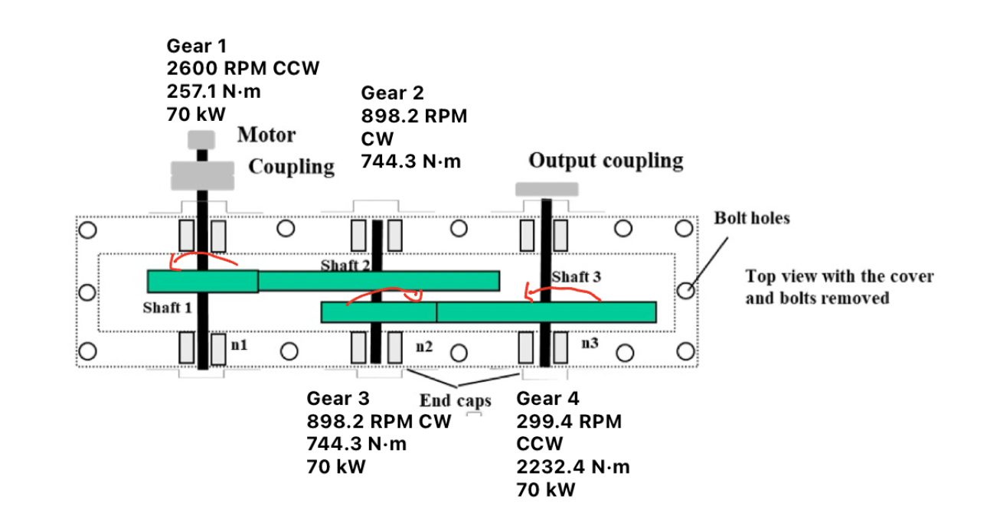
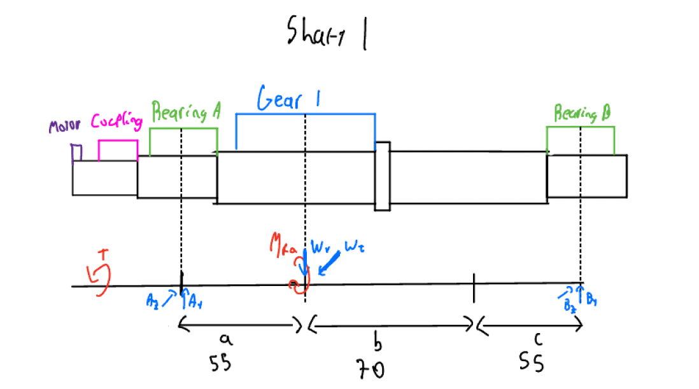
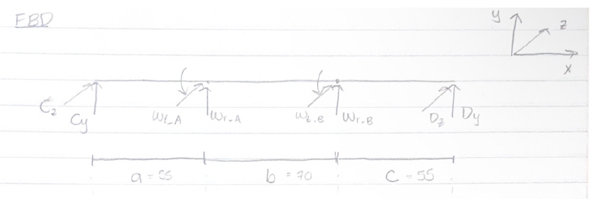
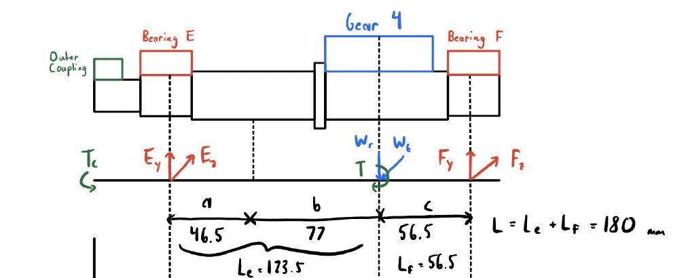
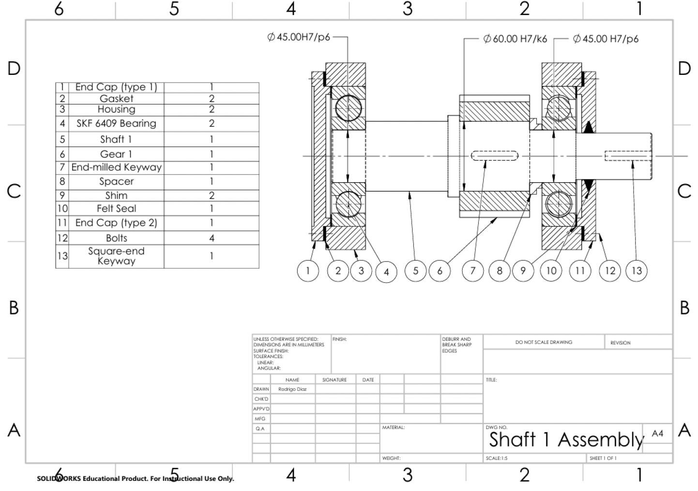
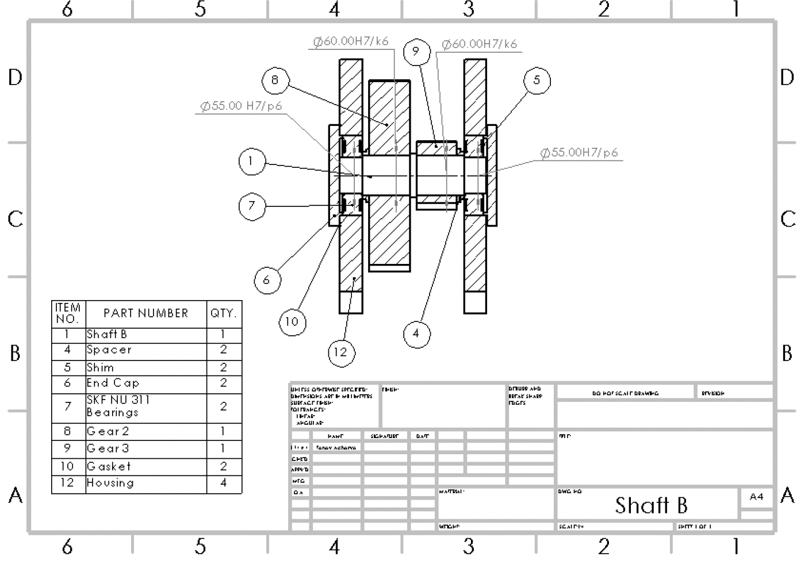
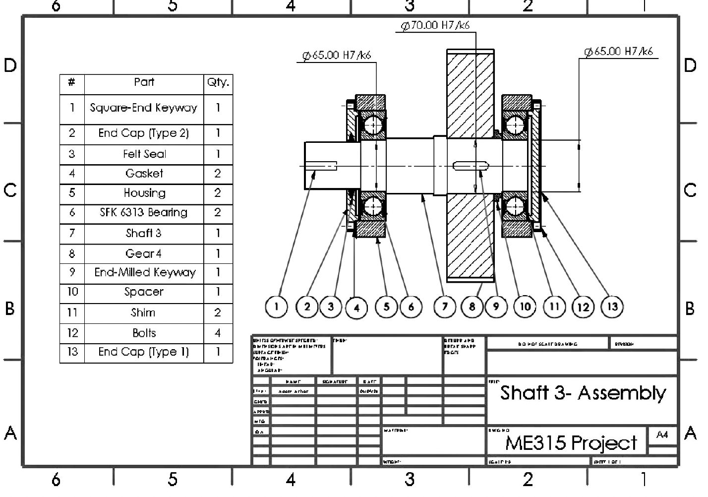
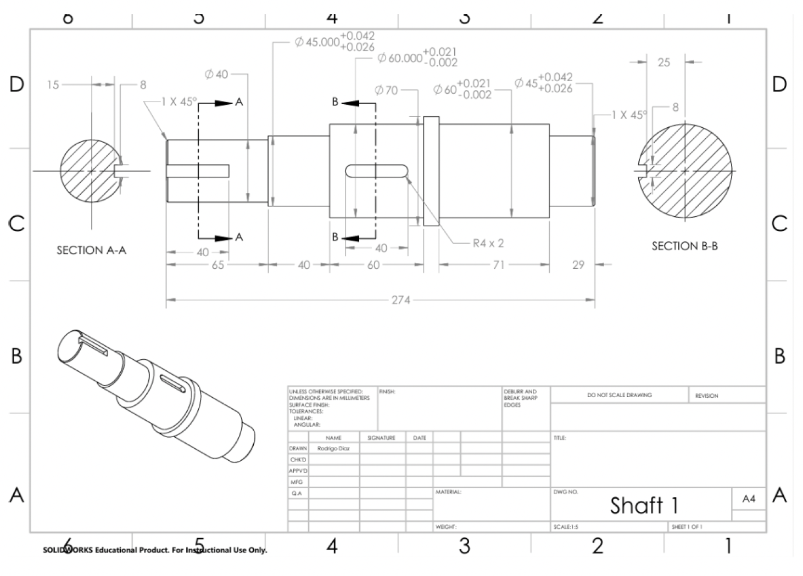
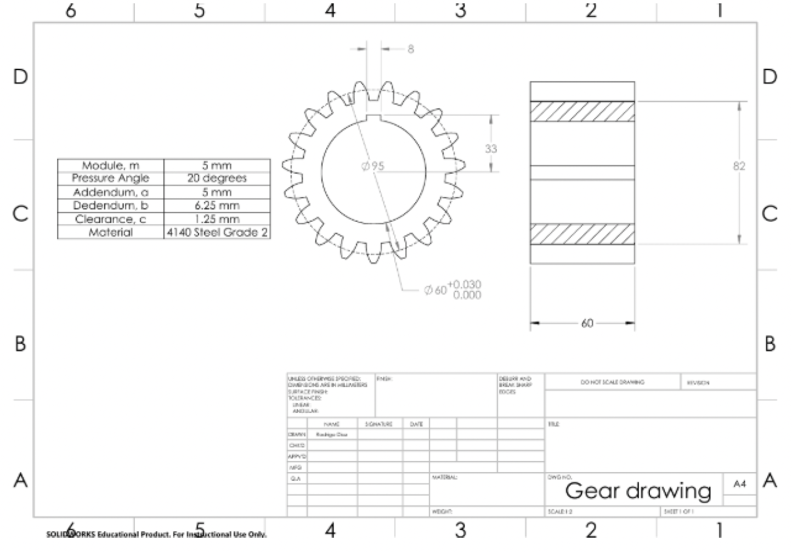

08 · ME 315
A fully sized and analyzed 70 kW gearbox - three shafts, four spur gears, and six bearings taken from free body diagram through AGMA gear stress, DE-Goodman shaft fatigue, and SKF bearing life selection, with every component carrying a calculated, traceable margin against failure.
System Overview
The gearbox takes 70 kW in from a motor coupling at 2600 RPM and delivers it to an output coupling at 299.4 RPM - an overall reduction ratio of 0.11515, or roughly 8.68:1, split across two spur gear stages. Shaft 1 carries the input pinion, Gear 1, which drives Gear 2 on Shaft 2. Shaft 2 is the intermediate shaft: Gear 2 receives power from the first mesh, and a second pinion on the same shaft, Gear 3, drives Gear 4 on Shaft 3, which carries the output coupling. All three shafts run in a single housing on six rolling-element bearings, located with end caps, shims, and felt seals.
Power stays essentially constant at 70 kW across every stage, so as speed drops through the reduction, torque climbs by the same factor - from 257.1 N·m on Shaft 1 up to 2,232.8 N·m on Shaft 3, an increase that tracks the 8.68:1 speed ratio almost exactly. That single relationship is what drives nearly every downstream decision in this project: shaft diameter, shaft material, and bearing capacity all had to scale up moving from input to output, even though the gears themselves get physically larger and slower.

Full power flow through the gearbox - Gear 1 (2600 RPM, 257.1 N·m) drives Gear 2, Gear 3 on the same shaft drives Gear 4 (299.4 RPM, 2232.4 N·m) - power holds at 70 kW throughout
Design Methodology
Every component in the gearbox was sized using the same repeatable process, not a one-off calculation per part. First, each shaft's loading was broken into a free body diagram, then resolved into shear and bending moment diagrams in both orthogonal planes to find the resultant bending moment and reaction force at each bearing location. Second, the two most highly loaded cross-sections on each shaft - almost always a gear keyway carrying combined bending and torsion, and a coupling keyway carrying torque only - were checked against both static yield (distortion-energy / von Mises theory) and infinite-life fatigue (a DE-Goodman failure line), with stress concentration factors applied at each keyway to capture the real local stress riser.
Third, every gear mesh was checked independently for both bending stress (AGMA Lewis-based method) and surface contact stress (AGMA Hertzian-based method), each corrected with dynamic factors for pitch-line velocity and gear quality, load distribution factors, and life factors calibrated to that specific gear's actual cycle count over the design service life. Fourth, the resultant radial reaction forces computed in step one were used to select real SKF catalog bearings, sized so the L10 dynamic life rating meets or exceeds the same service life target used for the shafts and gears - a full design life of roughly 14,560 hours.



Free body, shear, moment, and torque diagrams for Shafts 1-3 - the load path behind every reaction force and bending moment used downstream in the fatigue and bearing calculations
Engineering Drawings
Every shaft was fully detailed in SolidWorks: assembly drawings with a complete bill of materials, dimensioned shaft drawings, and gear drawings specifying module, pressure angle, addendum, dedendum, and clearance. Fits were specified at every seat, not left as nominal dimensions - gears are located on H7/p6 press fits and bearings on H7/k6 transition fits, with keyways, shims, spacers, felt seals, and end caps fully called out for assembly.



Assembly drawings for Shafts 1-3 - each with a full bill of materials and located H7/p6 gear and H7/k6 bearing fits


Dimensioned shaft drawing with toleranced fits and section views (left) - gear drawing specifying module, pressure angle, addendum, dedendum, and material (right)
Results
Pulling the shaft, gear, and bearing calculations together into one system-level result: the gearbox delivers 70 kW at an 8.68:1 reduction, and every single component - three shafts, four gears, six bearings - meets or exceeds the 14,560-hour design life target. The lowest safety margin anywhere in the system is 1.59, at the Shaft 3 coupling keyway, which makes it the one part of the design with the least room to spare and the first place to look if the gearbox ever needed to be lightened or re-optimized.
| Gear | Teeth | Speed (RPM) | Torque (N·m) | Bending nb | Contact nc |
|---|---|---|---|---|---|
| Gear 1 (input pinion) | 19 | 2600.0 | 257.1 | 4.93 | 2.83 |
| Gear 2 | 55 | 898.2 | 744.3 | 4.41 | 2.36 |
| Gear 3 | 19 | 898.2 | 744.3 | 1.66 | 1.91 |
| Gear 4 (output gear) | 57 | 299.4 | 2232.8 | 2.56 | 1.78 |
Both mesh stages hold a contact ratio above 1.4 (1.682 for stage one, 1.447 for stage two) - comfortably above the roughly 1.2 minimum generally used to guarantee smooth, continuous tooth engagement - and the full system transmission error works out to just −0.61 rpm, a strong indicator of accurate mesh geometry. Gear 3 carries the lowest bending margin in the train: it's the same 19-tooth pinion geometry as Gear 1, but running at the same 744.3 N·m torque Gear 2 sees, since it's mounted on the intermediate shaft downstream of the first reduction. Small pinion, high torque - that combination is exactly what drives its bending stress up and its factor of safety down relative to the other three gears. The two mating gear pairs were also intentionally given different Brinell hardness (450 HB pinions against 375 HB gears, a 1.20 hardness ratio) - a standard AGMA practice that improves wear life on the pinion, which sees proportionally more load cycles than its mating gear.
| Shaft | Material | Max Torque | Max Bending Moment | Static ny | Fatigue nf | Life |
|---|---|---|---|---|---|---|
| Shaft 1 (input) | SAE 1045 | 257.1 N·m | 220.0 N·m | 5.78 | 4.62 | Infinite |
| Shaft 2 (intermediate) | 8620 | 744.2 N·m | 733.6 N·m | 3.01 | 1.73 | Infinite |
| Shaft 3 (output) | 8620 | 2232.8 N·m | 646.4 N·m | 1.97 | 1.59 | Infinite |
Material selection tracks the torque climb through the train: Shaft 1 uses plain-carbon SAE 1045, appropriate for the lowest-torque, highest-speed member, while Shafts 2 and 3 step up to alloy 8620 as torque rises nearly ninefold by the output end. Every shaft still clears infinite life at its governing keyway, but the margin shrinks steadily from Shaft 1 (4.62) to Shaft 2 (1.73) to Shaft 3 (1.59) - the coupling keyway on Shaft 3, sized for the full 2,232.8 N·m of output torque, is the single tightest margin in the entire gearbox.
| Bearing Pair | Type | Bore | Required C | Selected C | Margin |
|---|---|---|---|---|---|
| A & B (Shaft 1) | SKF 6409 deep-groove ball | 45 mm | 52,623 N | 76,100 N | 1.4x - 4.7x life |
| C & D (Shaft 2) | SKF NU 311 cylindrical roller | 55 mm | 98,351 N | 156,000 N | 1.6x rated capacity |
| E & F (Shaft 3) | SKF 6313 deep-groove ball | 65 mm | 73,173 N | 92,300 N | 1.3x - 21x life |
All six bearings clear the required dynamic load rating for the full design life, and none need a scheduled bearing-change service over that life. Every shaft uses the same bearing part number at both ends, even where one side technically carries a much lighter load than the other - Bearing B, for instance, is rated for a 318,800-hour life against a 14,560-hour requirement. That's a deliberate trade: standardizing on one bearing per shaft simplifies procurement and assembly and is worth more in practice than trimming a slightly smaller, cheaper bearing onto the lighter-loaded side.
What this analysis actually delivers is a gearbox where every part's margin against failure is a calculated number, not an assumption - which means the design can be defended, manufactured, and iterated on with confidence rather than guesswork. It also does something a purely qualitative design pass can't: it identifies exactly where the system's real limit lives. The Shaft 3 coupling keyway, at 1.59, is unambiguously the weakest link in the gearbox - so if this design ever needed to shed weight or cost, that's precisely where material can't be cut, while Shaft 1's 4.62 fatigue margin shows real room to downsize if a lighter, cheaper input shaft were ever worth pursuing.
Reflection
Torque and speed trade off inversely at constant power, and that single relationship - not any one component in isolation - is what actually drives shaft material and diameter selection across a gear train. Recognizing that pattern early made the material choices for all three shafts fall out logically instead of by trial and error.
A full margin-of-safety analysis doesn't just confirm a design works - it tells you exactly where it barely works. Finding that the Shaft 3 coupling keyway, at 1.59, is the true governing constraint in a six-bearing, four-gear system is the kind of result that only comes from checking every component the same rigorous way, not just the ones that look highest-loaded at a glance.
Optimal on paper and optimal in practice aren't always the same thing. Selecting identical, deliberately oversized bearings at both ends of a shaft to simplify procurement and assembly - instead of the theoretically minimal part at each location - is a real engineering trade-off between analytical optimality and manufacturability.